Next: Question:
Up: Hydrodynamic Interaction in Stokes
Previous: Hydrodynamic Interaction in Stokes
In a viscous fluid, objects are dragged by the surrounding fluid.
(Imagine when you are in water pool or the sea.)
Boundary value problem (Dirichlet problem).
Expanding the integrand in the right-hand side
of Eq. (3.10),
we have
where we assume that the surface consists of a single sphere
and 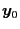 is its center.
Note that the surface integral in the right-hand side
is a tensor of order 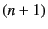 and
is called the force moment
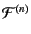
![$\displaystyle \mathcal{F}^{(n)} (\bm{y}_0) := - \int_S {\rm d}S(\bm{y})\ \Bigl[ \bm{y} - \bm{y}_0 \Bigr]^n \bm{f}(\bm{y}) ,$](img131.png) |
(3.12) |
and
 |
 |
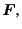 |
(3.13) |
| 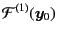 |
|
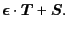 |
(3.14) |
Taking the terms up to 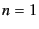 and substituting the above,
we have an expression[6]
where  and are given by
and are given by
| 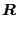 |
|
|
(3.16) |
| 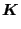 |
|
|
(3.17) |
Up to this order of expansion,
if we introduce the corresponding velocity moments, that is,
the translational and angular velocity  and
and
 and the rate of strain tensor
and the rate of strain tensor  ,
we have the closed linear set of equations
written in the matrix form as
,
we have the closed linear set of equations
written in the matrix form as
From the mathematical property of Eq. (3.10),
the whole matrix relating two vectors
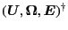 and
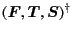
should be symmetric.
That is,
| 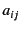 |
|
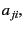 |
(3.19) |
| 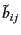 |
|
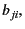 |
(3.20) |
| 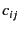 |
|
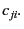 |
(3.21) |
However, we should note that
once we reduce the elements of vectors,
the symmetry does not hold.
From the definition, the second order tensors and  are symmetric and traceless, so that only 5 components
out of 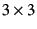 are independent.
Without the reduction to the independent components,
the linear set of equation becomes ill-defined
and the inverse matrix (with the full components) are not unique.
are symmetric and traceless, so that only 5 components
out of 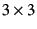 are independent.
Without the reduction to the independent components,
the linear set of equation becomes ill-defined
and the inverse matrix (with the full components) are not unique.
Subsections
Next: Question:
Up: Hydrodynamic Interaction in Stokes
Previous: Hydrodynamic Interaction in Stokes
Kengo Ichiki 2008-10-12